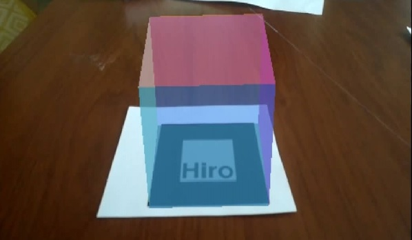

TOROSINA'S BLOG
Graficacion y Animacion


TEMAS DEL BLOG
ANGULAR
Angular es un framework para aplicaciones web desarrollado en TypeScript, de código abierto, mantenido por Google, que se utiliza para crear y mantener aplicaciones web de una sola página. Su objetivo es aumentar las aplicaciones basadas en navegador con capacidad de Modelo Vista Controlador (MVC), en un esfuerzo para hacer que el desarrollo y las pruebas sean más fáciles. La biblioteca lee el HTML que contiene atributos de las etiquetas personalizadas adicionales, entonces obedece a las directivas de los atributos personalizados, y une las piezas de entrada o salida de la página a un modelo representado por las variables estándar de JavaScript. Los valores de las variables de JavaScript se pueden configurar manualmente, o ser recuperados de recursos JSON estáticos o dinámicos. Angular es la evolución de AngularJS aunque incompatible con su predecesor.
REACT
Es una ibrería JavaScript de código abierto enfocada en la visualización y desarrollada por Facebook. Es software libre y a partir de su liberación una creciente comunidad de desarrolladores la está usando. Se crea en base a unas necesidades, generadas por el propio desarrollo de la web de la popular red social. En Facebook necesitaban herramientas para un desarrollo rápido pero focalizadas en un mayor rendimiento que otras alternativas existentes en el mercado.
VUEJS
Es un framework progresivo para construir interfaces de usuario. Vue también es perfectamente capaz de soportar aplicaciones sofisticadas de una sola página (en inglés single-page-application o SPA) cuando se utiliza en combinación con herramientas modernas y librerías compatibles. Características Accesible. Versátil: Su núcleo es bastante pequeño y se escala a través de plugins, con lo cual escucharás mucho que Vue es una librería muy parecida a React, una librería que cumple un propósito. Escalable por el mismo tema de la versatilidad. Reactivo.
THREE.AR.JS (REALIDAD AUMENTADA)
Three.js es una librería de Javascript desarrollada por Ricardo Cabello en 2010. Esta increíble herramienta nos permite trabajar con gráficos 3D en el navegador, utilizando WebGL, de una manera muy sencilla e intuitiva. Para resumir, Three.js es excelente para llevar el Creative Coding al navegador. Three.js es a WebGL lo que jQuery es a JavaScript, ofrece sintaxis declarativa amada por muchos, y abstrae los dolores de cabeza del 3D en los navegadores. Hoy en día WebGL nos permite crear experiencias interactivas en una gran variedad de plataformas y dispositivos. JSARToolKit es una biblioteca de realidad aumentada para JavaScript. También se considera una biblioteca de software libre publicada bajo la Licencia Pública GNU y un puerto directo de FLARToolKit para Flash que creé para la demo de realidad aumentada con aceleración gráfica de Mozilla.
JSARTOOLKIT (REALIDAD AUMENTADA)
JSARToolKit es una biblioteca de realidad aumentada para JavaScript. También se considera una biblioteca de software libre publicada bajo la Licencia Pública GNU y un puerto directo de FLARToolKit para Flash que creé para la demo de realidad aumentada con aceleración gráfica de Mozilla. FLARToolKit en sí es un puerto de NyARToolKit de Java, que a su vez es puerto de ARToolKit C. Después de esta larga explicación, ahora sí comenzamos. JSARToolKit opera en elementos canvas. Debido a que necesita leer la imagen fuera del elemento canvas, es necesario que esta proceda del mismo origen que la página o que utilice la tecnología CORS para obtener una política con aproximadamente el mismo origen. En resumen, establece la propiedad crossOrigin del elemento de vídeo o imagen que quieras utilizar como textura para '' o 'anonymous'.

AFRAME ARJS (REALIDAD AUMENTADA)
AR.js es una solución eficiente de Realidad Aumentada en la Web. Se ejecuta al 100% en su navegador web, esto significa que no hay que instalar ninguna aplicación. No hay necesidad de un dispositivo específico, por ejemplo. Tango o iphone. Se ejecuta en todas las plataformas móviles: Android, iOS11 y Windows móvil. Puedes usarlo con tu propio teléfono. Dependiendo de su dispositivo, puede funcionar muy rápido, ¡hasta 60 fps en teléfonos de 2 años! Además de eso, el código es de código abierto y todo está disponible en github. A-Frame es muy fácil de usar, así que quería asegurarme de que AR.js estaba funcionando bien con él. Por lo tanto, al combinar A-Frame y AR.js, es fácil para todos crear contenido de AR en la web.
PRIMROSE VR (REALIDAD VIRTUAL)
Primrose es un entorno inmersivo para navegadores web en dispositivos de escritorio y móviles por igual. Dentro de este entorno, los desarrolladores web pueden ser aplicaciones que se mejoran progresivamente para brindar soporte a los usuarios en una amplia variedad de factores de forma, incluidos los auriculares VR de gama alta.
A-FRAME (REALIDAD VIRTUAL)
A-Frame es un framework web de código abierto para crear experiencias de realidad virtual (VR). Es mantenido por desarrolladores de Supermedium (Diego Marcos, Kevin Ngo), Google (Don McCurdy) y la comunidad WebVR. Es una estructura de sistema de componente de entidad para Three.js donde los desarrolladores pueden crear escenas 3D y WebVR usando HTML. HTML proporciona una herramienta de autoría familiar para desarrolladores y diseñadores web al tiempo que incorpora un popular patrón de desarrollo de juegos utilizado por motores como Unity (Entidad Componente Sistema).
PHASER.IO

Phaser es un marco de juego 2D de software gratuito para hacer juegos HTML5 para computadoras de escritorio y móviles. Fue creado por Photon Storm. Phaser usa un renderizador Canvas y WebGL internamente y puede intercambiarse automáticamente de acuerdo con el soporte del navegador. Esto permite una representación rápida en equipos de escritorio y dispositivos móviles. Utiliza la biblioteca Pixi.js para renderizar. Los juegos se pueden compilar para iOS, Android y aplicaciones de escritorio nativas a través de herramientas de terceros como Apache Cordova.

Mi nombre es KEVIN TOROSINA
Estudiante de la carrera de Ing. en Sistemas de la PUCESE